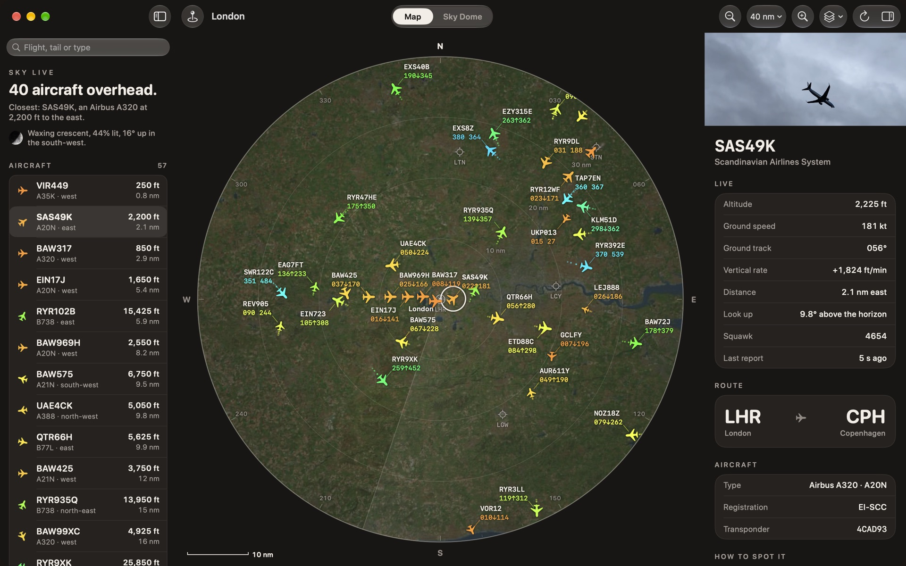
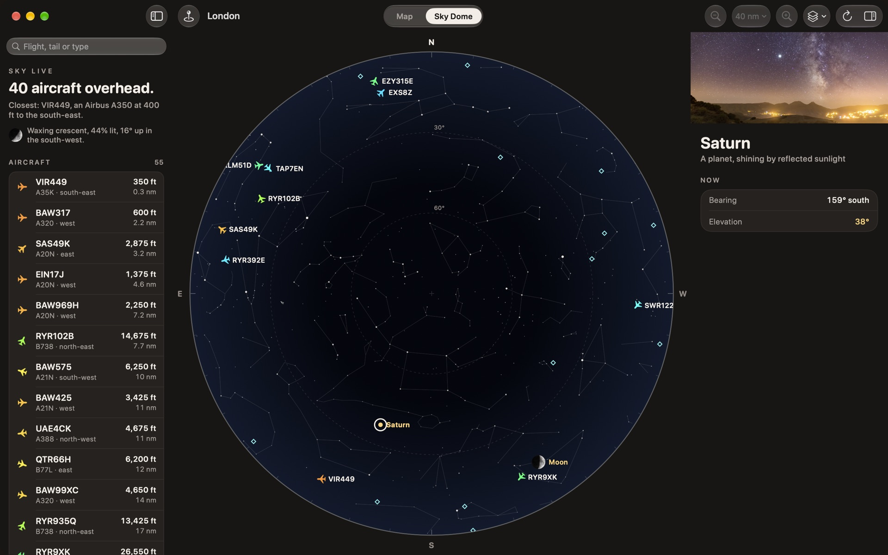
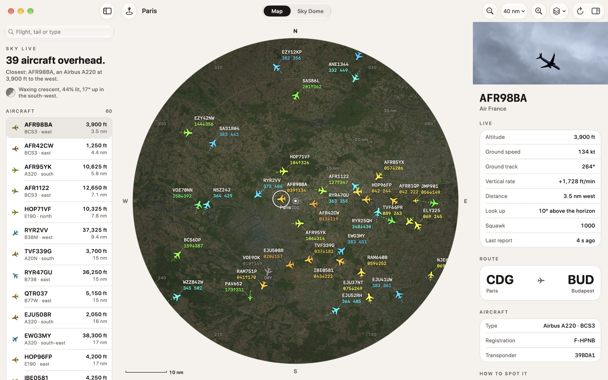
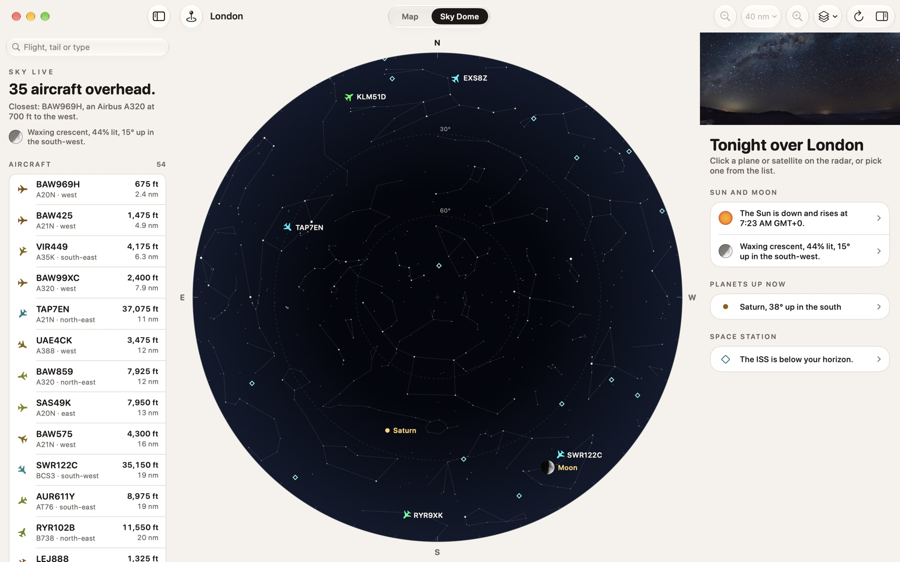
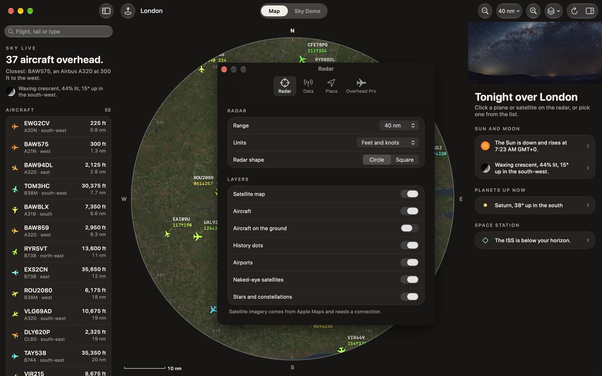
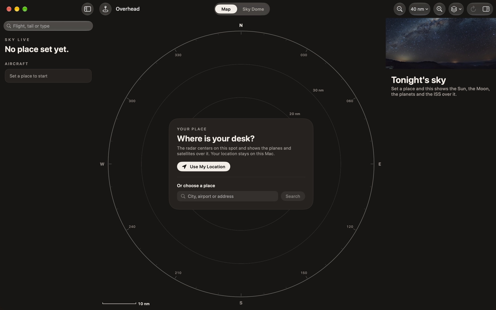
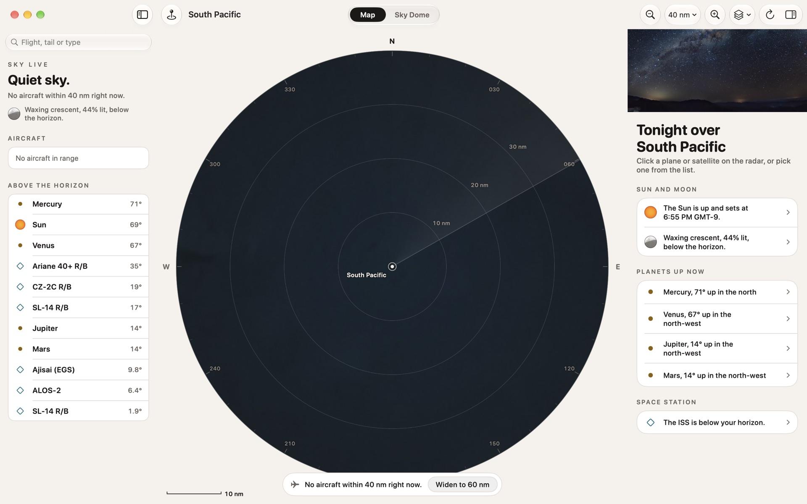
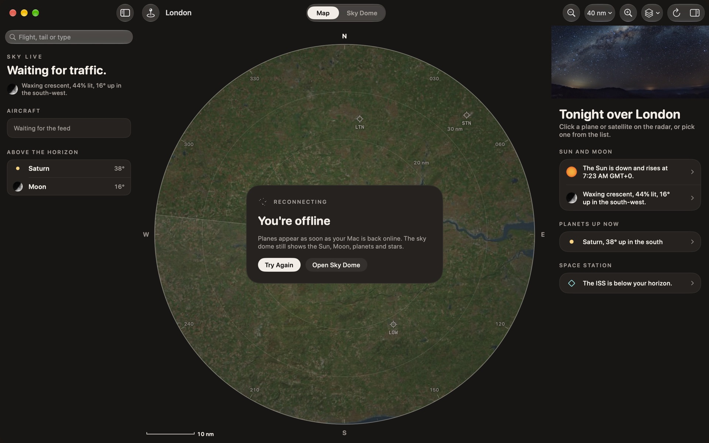
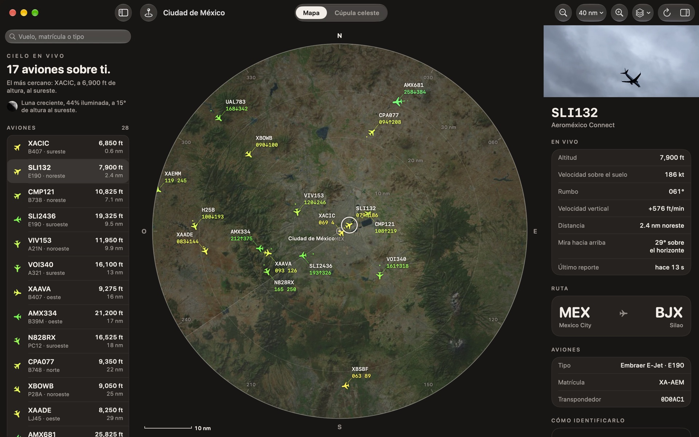

Overhead for Mac is a desk radar. It draws the aircraft flying around a place you choose, each one pointing the way it is heading and coloured by height, and it has a second view, the sky dome, for the Sun, Moon, planets, stars and satellites above that place. The Mac app came out on 6 November 2026. Version 2.5.1 gives it the look of the iPhone app and went to App Review on 17 November 2026.

What changed in 2.5.1
- Apple Maps satellite imagery sits under the radar dial, so a plane is drawn over the ground it is flying over. It can be switched off under Layers.
- The sky dome shows the Moon from NASA's lunar imagery, lit for the current phase, and a NASA photograph of the Sun.
- The sidebar opens with a plain sentence: how many aircraft are overhead, which is closest, and where the Moon is.
- With nothing selected, the inspector lists tonight's sky over your place: when the Sun rises or sets, the Moon, the planets that are up and the Space Station.
- Selecting a plane shows its live figures and, with Overhead Pro, its route, type, registration and a drawing of the details that tell that airframe apart.
- Version 2.5.0 could freeze when its window was dragged to the narrowest width. That is fixed.
Why put a radar on a desk
The iPhone app is for standing outside and pointing at the sky. Most plane spotting does not happen like that. It happens at a desk near a window, when something loud goes over and you want to know what it was before it is gone. A phone is the wrong tool for that moment: by the time it is unlocked and pointed, the aircraft has left.
The Mac app stays open in a corner of the screen instead. The list on the left is sorted nearest first, so the plane you just heard is usually the top row. One click gives its height, speed and heading, how far away it is and how high above the horizon to look. The same window answers the evening questions: whether the bright point in the south is Saturn, and when the Space Station next comes over.
It asks for very little. There is no account. Location is optional, and a typed place name works the same way. Aircraft positions come from community ADS-B networks that anyone with a receiver can feed.
Screens
Real captures of the running app, 2880 × 1800 originals. Download all nine at full size (zip).


Saturn selected, with the Moon and high aircraft marked.


Paris. The dial stays dark so the traffic reads the same by day.


Sun, Moon, planets and the Space Station, each one clickable.


Range, units, radar shape and eight layers.


Use your location, or type a city, airport or address.


No traffic over the South Pacific, so the sky fills the list.


The sky dome keeps working without a connection.


Mexico City, with a flight from MEX to Silao selected.
Facts
- Requires macOS 15 or later. Free to download from the Mac App Store.
- One listing for iPhone, iPad, Apple Watch and Mac. An Overhead Pro purchase on any of them covers the others, with Family Sharing.
- Free on the Mac: the radar, the sky dome, satellites, planets and each plane's live figures. Overhead Pro adds type, registration, route and the how-to-spot drawing.
- Radar range from 10 to 250 nautical miles. Light and dark appearance, full screen, and a VoiceOver label on every aircraft.
- The Mac app is in English (US, UK, Australia, Canada) and Spanish (Mexico and Spain).
- No account. Location is optional and is used only to centre the radar.
- Made by Hemal Modi, an independent developer in Dubai.
Keyboard
| Keys | Does |
|---|---|
| ⌘1 ⌘2 | Map, Sky Dome |
| ⌘= ⌘- | Zoom in, zoom out |
| ⌘0 | Centre on my place |
| ⌥⌘ + arrows | Pan north, south, west, east |
| ⌘R | Refresh traffic |
| ⇧⌘P | Pause or resume updates |
| Arrow keys in the list | Move the selection. esc clears it. |
Dates worth a desk radar
- Geminid meteor shower, peak on the night of 13 to 14 December 2026. The Moon is a few days past new and sets in the evening. In-app event on iPhone and iPad, 12 to 15 December: event page.
- Flights home for the holidays, 18 December to 3 January: event page.
- The closest full Moon of 2026, 24 December at 01:28 UTC (Espenak, full Moon at perigee): event page.
- The first sky of 2027, 31 December to 2 January: event page.
In-app events appear on the App Store for iPhone and iPad. On the Mac the same nights show in the sky dome and in the Tonight list.
Data and image credits
- Aircraft positions: airplanes.live, adsb.lol and adsb.fi, community ADS-B networks. A Flightradar24 API key of your own is optional.
- Moon: NASA Scientific Visualization Studio, CGI Moon Kit. Sun: NASA/SDO.
- Header films: Pexels contributors and NASA.
- Satellite imagery: Apple Maps.